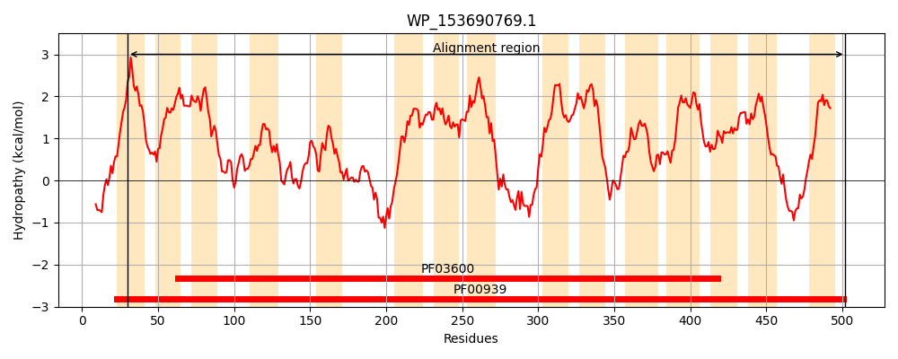
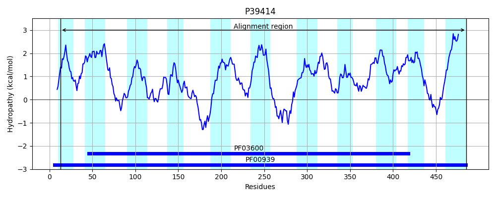
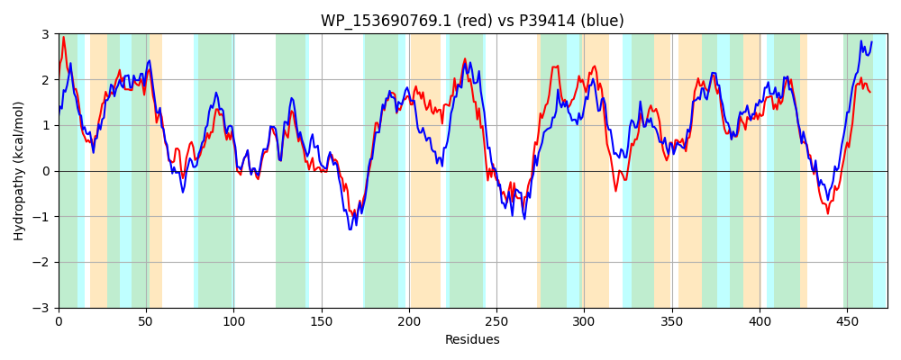

Hit Accession: P39414
Hit TCID: 2.A.47.3.3
Hit Description: gnl|BL_ORD_ID|10267 gnl|TC-DB|P39414|2.A.47.3.3 PUTATIVE TARTRATE CARRIER (TARTRATE TRANSPORTER) (TARTRATE/SUCCINATE ANTIPORTER) - Escherichia coli.
Mach Len: 473
e:0.000000
Query TMS Count : 15
Hit TMS Count: 11
TMS-Overlap Score: 9.900000
Predicted Substrates:CHEBI:83353;eliglustat tartrate, CHEBI:30031;succinate(2-)
BLAST Alignment:
Score: 1419 , Bit scores: 551 bits, E-value: 0.0e+00, Alignment length: 473, Percentage identity: 54
Query: 30 PIIVAVLLLFVPVPDGLPPYAWHYFAIFVGVIVGLIFEPLPGAVIGITGVVVIALCSQWLLFSPEQMAAPSFKLAGASFKWAVSGFGNSTVWLIFGAFMFAAGYDKTQFGRRLALILVKYLGRRSLTLGYAITFADLLLAPFTPSNTARSGGTIYPIIANLPPLYGSKPNDPSARKIGSYLMWVAITAACITSSMFLSALAPNLLALALVKSIVGINISWGTWFIAFLPLGVLLILTMPLLAYWFYPPEVKINNEVPLWAARELEKLGKLSRNETLLLVFVCFALMMWIFAADWIEPALAALLVIVLMLWTGVLSWSDITNNKAAWNTFVWFATLVALADGLSSTGFIAWLGKEGGALMGGISPGVATIVLLLAFYLLHYLFASTTAHTTALLPAMLTIAATIPGMNMEVFVLLMVTSLGVMGIITPYGTGPSPIYYGSGYLPTKDYWRLGTIFGAIFLAALLLIGYPWMSMM 502
P+ V ++ +PVP GL + W YFA+F GVIVGLI EP+PGAV+ + G+ +IA+ S WLLFSPEQ+A P FK S WAVSGF NS +WLIF AFMF GY+KT GRR+ALILVK +G R+L LGYA+ F++L+LAP TPSN+AR G IYPII NLPPLY S+PND S+R IGSY+MW+ I A C+TS++FL+A+APNLL + L+KS +SWG WF+ LPL +LL+L +P LAY YPP +K ++VP WA EL+ +G L E +L + AL++WIF D+I+ A+ V+ LML ++SW DI +NKAAWN F W A+L+ LA GL++TGFI+W GK + G SP + + L++ FYLL Y FAS TA+T+AL P M+ A +P + + VF L++ ++G+ I+TPY TGPSPIYYGSGYLPT DYWRLG IFG IFL L++ G WM ++
Sbjct: 13 PLAVIAIIALLPVPAGLENHTWLYFAVFTGVIVGLILEPVPGAVVAMVGISIIAILSPWLLFSPEQLAQPGFKFTAKSLSWAVSGFSNSVIWLIFAAFMFGTGYEKTGLGRRIALILVKKMGHRTLFLGYAVMFSELILAPVTPSNSARGAGIIYPIIRNLPPLYQSQPNDSSSRSIGSYIMWMGIVADCVTSAIFLTAMAPNLLLIGLMKSASHATLSWGDWFLGMLPLSILLVLLVPWLAYVLYPPVLKSGDQVPRWAETELQAMGPLCSREKRMLGLMVGALVLWIFGGDYIDAAMVGYSVVALMLLLRIISWDDIVSNKAAWNVFFWLASLITLATGLNNTGFISWFGKLLAGSLSGYSPTMVMVALIVVFYLLRYFFASATAYTSALAPMMIAAALAMPEIPLPVFCLMVGAAIGLGSILTPYATGPSPIYYGSGYLPTADYWRLGAIFGLIFLVLLVITGLLWMPVV 485 | Protein Hydropathy Plots: |
|---|
|  |  |
Pairwise Alignment-Hydropathy Plot:
|
|---|
|  |